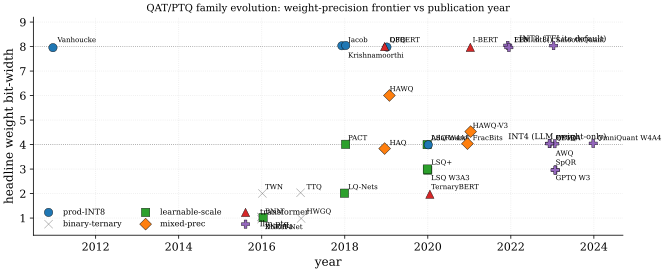

Neural network quantization sits at the intersection of numerical analysis, statistical signal processing, and hardware-aware model compression. The historical arc divides cleanly into five families, walked through paragraph-by-paragraph after the SoTA leaderboard below: production INT8 baselines (2011-2018), the binary*/*ternary extreme-low-bit line (2016-2017), learnable-scale QAT (2018-2020), mixed-precision and transformer-specific QAT (2019-2021), and the LLM-PTQ era (2022-2024). Each family is defined by the granularity1 (per-tensor vs per-channel), the placement of trainable parameters (clipping bound, step size, zero-point), and the regime of weight-vs-activation asymmetry2 that drives the headline accuracy.
Two foundational surveys define the modern vocabulary. (Nagel et al. 2021) is Qualcomm AI Research's practitioner-oriented summary of the PTQ state-of-the-art circa 2021, with concrete algorithmic descriptions of CLE, AdaRound, and bias correction; (Gholami et al. 2022) is UC Berkeley's academic literature review organizing quantization into a taxonomic tree (precision type, granularity, symmetry, scheme). (Nagel et al. 2021)'s Section 4 in particular gives the "calibrate-CLE-biasCorrect-AdaRound" PTQ recipe that achieves under 1% INT8 accuracy loss on most CNN architectures, and the four-stage ablation on MobileNetV2 INT8 shows that skipping any stage costs 0.2-0.8 points top-1; an instructive sensitivity to the calibration data3 used at each step.
The training-time line was crystallized by (Jacob et al. 2018), whose integer-only inference formulation and fake-quantization graph transformation became the reference design for TensorFlow Lite and PyTorch Eager Mode. Their work rests on the straight-through estimator of (Bengio, Léonard, and Courville 2013), which supplies a surrogate gradient for the non-differentiable rounding operator and introduces the gradient mismatch4 that all later QAT analyses must absorb. (Esser et al. 2020) introduced the learned step-size formulation (LSQ), demonstrating that the learnable-scale itself can be treated as a first-class trainable parameter; the gradient-scale factor it derives is what prevents one of the dominant training-instability5 modes when scales co-train with weights.
| Vision (IN1k) | NLP (GLUE) | LLM (WT) | System | ||||||||
| Method | Year | Backbone | Loss/Algo | Data | Bits | Top-1 | Avg | PPL | Comp | Speedup | |
| Vanhoucke (prod. INT8) (Vanhoucke, Senior, and Mao 2011) | 2011 | DNN-acoustic | RTN sym. per-tensor | Voice search | 8/8 | - | - | - | - | 4x | 3x |
| Jacob (TFLite QAT) (Jacob et al. 2018) | 2018 | MobileNet-V1 | QAT(STE, ReLU6, sym-W asym-A) | IN1k 1.28M | 8/8 | 70.0 | -0.1 | - | - | 4x | 1.6x |
| Krishnamoorthi (per-channel) (Krishnamoorthi 2018) | 2018 | ResNet-50 | RTN per-channel | IN1k 1.28M | 8/8 | 75.9 | -0.4 | - | - | 4x | - |
| BNN (Courbariaux et al. 2016) | 2016 | AlexNet | sign(w) STE, latent-w | IN1k 1.28M | 1/1 | 41.8 | -14.8 | - | - | 32x | 7-58x |
| XNOR-Net (Rastegari et al. 2016) | 2016 | ResNet-18 | , L1-mean | IN1k 1.28M | 1/1 | 51.2 | -18.1 | - | - | 32x | 58x |
| DoReFa-Net (Zhou et al. 2016) | 2016 | AlexNet | tanh-norm + uniform-k | IN1k 1.28M | 1/2 | 49.8 | -6.1 | - | - | 16x | - |
| HWGQ (Cai et al. 2017) | 2017 | AlexNet | Lloyd-Max half-Gauss + clipped-STE | IN1k 1.28M | 1/2 | 52.7 | -5.5 | - | - | 16x | - |
| TWN (Li, Zhang, and Liu 2016) | 2016 | ResNet-18 | ternary(=0.7 mean-abs) | IN1k 1.28M | 2/32 | 54.5 | -14.8 | - | - | 16x | - |
| TTQ (Zhu et al. 2017) | 2017 | ResNet-18 | trained ternary() | IN1k 1.28M | 2/32 | 57.5 | -11.8 | - | - | 16x | - |
| PACT (Choi et al. 2018) | 2018 | ResNet-50 | trainable clip(, wd=1e-4) | IN1k 1.28M | 4/4 | 76.5 | +0.1 | - | - | 8x | - |
| LSQ (Esser et al. 2020) | 2020 | ResNet-50 | trainable s, g=1/ | IN1k 1.28M | 4/4 | 76.7 | +0.6 | - | - | 8x | - |
| LSQ (Esser et al. 2020) | 2020 | ResNet-50 | trainable s + clipped-STE | IN1k 1.28M | 3/3 | 77.1 | +1.0 | - | - | 10.7x | - |
| LSQ+ (Bhalgat et al. 2020) | 2020 | EfficientNet-B0 | trainable (s,z), MSE-grid init | IN1k 1.28M | 3/3 | 71.9 | -5.4 | - | - | 10.7x | - |
| LQ-Nets (D. Zhang et al. 2018) | 2018 | ResNet-18 | learned basis, EM-update | IN1k 1.28M | 2/2 | 64.9 | -4.4 | - | - | 16x | - |
| AdaRound (Nagel et al. 2020) | 2020 | ResNet-18 | learned rounding h(V), -anneal | IN1k 1024-cal | 4/32 | 68.7 | -1.0 | - | - | 8x | - |
| AdaRound (Nagel et al. 2020) | 2020 | MobileNet-V2 | learned rounding h(V), -anneal | IN1k 1024-cal | 4/32 | 69.3 | -2.4 | - | - | 8x | - |
| DFQ + BC (Nagel et al. 2019) | 2019 | MobileNet-V2 | CLE + analytic bias-correction (data-free) | none | 8/8 | 71.2 | -0.7 | - | - | 4x | - |
| HAWQ-V3 (Yao et al. 2021) | 2021 | ResNet-50 | ILP(Tr(H), dyadic, BOPs+lat.) | IN1k 1.28M | 4/8 | 75.4 | -0.7 | - | - | 7.7x | 1.5x |
| FracBits (Yang and Jin 2021) | 2021 | MobileNet-V2 | mixture-Q(b=2+6()) | IN1k 1.28M | 4/4 | 69.9 | -1.9 | - | - | 8x | - |
| HAQ (Wang et al. 2019) | 2019 | MobileNet-V1 | DDPG + hw-sim reward | IN1k 1.28M | 3.8/8 | 70.2 | -0.8 | - | - | 8.4x | - |
| Q8BERT (Zafrir et al. 2019) | 2019 | BERT-base | QAT(sym-W asym-A, LR=2e-5) | GLUE+SQuAD | 8/8 | - | - | 83.2 | - | 4x | 3.7x |
| I-BERT (Kim et al. 2021) | 2021 | RoBERTa-base | QAT + integer GELU/softmax/LN | GLUE | 8/8 | - | - | 83.0 | - | 4x | 4x |
| TernaryBERT (W. Zhang et al. 2020) | 2020 | BERT-base | TWN+LAT + KD(attn,hidden,logit) | GLUE | 2/8 | - | - | 83.2 | - | 14.9x | - |
| GPTQ (Frantar et al. 2023) | 2023 | LLaMA-7B | OBS-Cholesky(group=128, act-ord) | C4 128x2048 | 4/16 | - | - | - | 5.83 | 4x | 3.3-4.5x |
| GPTQ (Frantar et al. 2023) | 2023 | LLaMA-7B | OBS-Cholesky(group=128) | C4 128x2048 | 3/16 | - | - | - | 8.07 | 5.3x | - |
| AWQ (Lin et al. 2024) | 2023 | LLaMA-7B | per-channel scale-search() | Pile 128x512 | 4/16 | - | - | - | 5.78 | 4x | 3.2x |
| AWQ (Lin et al. 2024) | 2023 | LLaMA-7B | per-channel scale-search() | Pile 128x512 | 3/16 | - | - | - | 6.24 | 5.3x | - |
| SmoothQuant (Xiao et al. 2023) | 2023 | LLaMA-7B | diag-rescale(=0.85), W8A8 | Pile 512x512 | 8/8 | - | - | - | 5.83 | 2x | 1.8-2x |
| LLM.int8() (Dettmers et al. 2022) | 2022 | OPT-175B | vector-wise INT8 + FP16-outlier(thr=6) | Pile-cal | 8/16 | - | - | - | - | 2x | 0.85x |
| QLoRA (Dettmers et al. 2023) | 2023 | LLaMA-65B | NF4 base + LoRA(r=64), double-Q | OASST1 | 4/16 | - | - | - | - | 4x | 0.4x |
| SpQR (Dettmers et al. 2024) | 2023 | LLaMA-33B | 3-bit + 1% FP16 sparse outliers | C4 calib | 3.94/16 | - | - | - | 4.14 | 5.3x | 1.15x |
| OmniQuant (Shao et al. 2024) | 2024 | LLaMA-7B | LWC+LET(block-wise reconst.) | WikiText 128x2k | 4/4 | - | - | - | 11.26 | 8x | - |
| OmniQuant (Shao et al. 2024) | 2024 | LLaMA-7B | LWC+LET | WikiText 128x2k | 2/16 | - | - | - | 15.3 | 8x | - |
| FP8 (Micikevicius et al. 2022) | 2022 | GPT-3 175B | E4M3-fwd, E5M2-bwd | C4-pretrain | 8/8 | - | - | - | - | 2x | 2x |
The table groups the literature into five families, walked through in chronological order. The earliest production INT8 line ((Vanhoucke, Senior, and Mao 2011); Krishnamoorthi; (Jacob et al. 2018)) established that PTQ + per-channel weights closes most of the FP32-to-INT8 gap on well-behaved CNNs (ResNet, Inception); the residual gap on depthwise-heavy architectures (MobileNet, EfficientNet) is what motivated the QAT line, because per-tensor PTQ on MobileNet-V2 collapses to 0.1% top-16.
The binary and ternary extreme line ((Courbariaux et al. 2016) BNN, (Rastegari et al. 2016) XNOR-Net, (Li, Zhang, and Liu 2016) TWN, (Zhu et al. 2017) TTQ) showed that 1-2 bit weights preserve a substantial fraction of FP32 accuracy when paired with a learned per-tensor scale and a first-layer-FP32, last-layer-FP32, binary-core sandwich. The XNOR-popcount kernel and the latent-weights training trick are the two technical pillars that all subsequent extreme-low-bit work inherits; the 18-point IN1k gap of XNOR-Net to FP32 ResNet-18 is the cautionary number that pure binary deployment is microcontroller-only and that 4-8 bit activations are required for production7.
The learnable-scale QAT family (DoReFa-Net, PACT trainable clip , LSQ trainable step , LSQ+ trainable ) made the quantizer's parameters first-class trainables. LSQ at W3A3 reaches 77.1% on ResNet-50, exceeding the FP32 baseline of 76.1%; a regularization-by-noise effect that confirmed QAT can be lossless or even beneficial at moderate bit-widths. The gradient-scale balancing is load-bearing for convergence8: without it, decays to zero and the quantizer collapses.

Mixed-precision allocation ((Dong et al. 2019) HAWQ, HAWQ-V2 trace, HAWQ-V3 ILP, HAQ DDPG, FracBits) attacked bit allocation10 as a constrained optimization problem. HAWQ-V3's one-second ILP over Hessian-trace sensitivity, BOPs, and profiled-latency constraints is the most operational of these methods; FracBits' fractional- relaxation cuts the search to a single training run. The family's load-bearing limitation is scaling failure11: per-layer Hessian trace estimation costs hours on LLaMA-70B, which is why LLM quantization abandoned mixed-precision in favor of weight-only + outlier-handling12.
The transformer QAT line (Q8BERT W8A8, I-BERT integer-only GELU/softmax/LN, TernaryBERT W2A8 + KD) and the LLM-PTQ era (LLM.int8() outlier sidecar, GPTQ second-order Cholesky, AWQ scale-search, SmoothQuant diagonal rescale, QLoRA NF4+LoRA, SpQR sparse 3-bit, OmniQuant LWC+LET) define the modern frontier. The "quantize the matmuls, float the normalization" template established by Q8BERT in 2019 is still the universal layout for transformer QAT, with outlier-aware methods stacking on top of it for the 6.7B+ parameter regime where coordinated activation outliers13 emerge. The W4A16 weight-only regime is essentially solved (GPTQ, AWQ within 0.1 ppl of FP16); the W4A4 regime opened only with OmniQuant's block-wise reconstruction in 202414, and the W2A16 regime is on the active research frontier.
The table separates four regimes by precision: W8A8 (production-deployable, TFLite/ONNX), W4A4 (mid-2020s frontier, edge accelerators with INT4 tensor cores), W4A16 (LLM weight-only, memory-bandwidth-bound serving), and W3-W2 (extreme weight compression with sparse outlier safety nets). Three readings. First, learnable-scale methods (LSQ, LSQ+) consistently match or exceed PTQ methods (RTN, AdaRound) on CNN backbones at 3-4 bits, but at the cost of a full retraining budget; for LLMs this cost is prohibitive and the LLM-PTQ family wins by construction. Second, KD (TernaryBERT) is the load-bearing element for sub-4-bit weight-only on small networks: 5+ GLUE points come from the teacher signal, not from the quantization recipe itself. Third, the activation precision lags the weight precision by one or two regimes at every point in the timeline: weights at 1-2 bits with activations at 32 in 2016, weights at 4 with activations at 8 in 2020, weights at 4 with activations at 16 in 2023, and only OmniQuant 2024 closing the gap to W4A4 on LLMs. This persistent weight-vs-activation asymmetry15 is the single most predictive structural feature for choosing which family to deploy.
References
Per-tensor vs per-channel granularity: per-channel weight quantization recovers 2-5 points top-1 on MobileNetV2 at negligible hardware cost, but per-channel activation quantization is rarely supported because the reduction-axis layout in INT8 GEMM kernels cannot absorb a per-channel scale lookup at full throughput.↩︎
Weight-vs-activation asymmetry: weights quantize easier than activations because they are static, near-zero-mean, and admit per-output-channel scales; activations are runtime-dependent, post-ReLU one-sided, and constrained to per-tensor scales by GEMM-kernel layout. The W4A4 regime closed only in 2024 (OmniQuant) while W8A8 was solved in 2018 (Jacob).↩︎
Calibration data sensitivity: PTQ accuracy depends on 128-1024 calibration samples whose exact indices are rarely published; switching from C4 to Pile shifts LLaMA-7B perplexity by 0.05-0.1 in GPTQ, and below 256 CNN samples the range estimates wobble more than 5%.↩︎
STE gradient mismatch: the straight-through estimator skips the rounding nonlinearity in the backward pass, yielding a biased surrogate whose bias is under a locally linear loss assumption (Yin et al. 2019) but grows uncontrollably for sharp minima or saturated activations.↩︎
QAT training instability: low-bit (W2/W3) training diverges without (i) clipped STE (Cai et al. 2017), (ii) gradient-scale balancing of step size vs. weights (Esser et al. 2020), or (iii) BN-statistics freezing after warmup; unclipped STE converges to spurious critical points (Yin et al. 2019).↩︎
Scaling failure: methods that work for ResNet-50 fail on LLaMA. INT8 PTQ collapses on MobileNetV2 (per-tensor: 0.1% top-1) without per-channel; HAWQ-trace mixed-precision is computationally infeasible above ~1B parameters; LLM.int8() is counterproductive below 6.7B because the outlier-decomposition machinery adds latency without an outlier signal to capture.↩︎
Weight-vs-activation asymmetry: weights quantize easier than activations because they are static, near-zero-mean, and admit per-output-channel scales; activations are runtime-dependent, post-ReLU one-sided, and constrained to per-tensor scales by GEMM-kernel layout. The W4A4 regime closed only in 2024 (OmniQuant) while W8A8 was solved in 2018 (Jacob).↩︎
QAT training instability: low-bit (W2/W3) training diverges without (i) clipped STE (Cai et al. 2017), (ii) gradient-scale balancing of step size vs. weights (Esser et al. 2020), or (iii) BN-statistics freezing after warmup; unclipped STE converges to spurious critical points (Yin et al. 2019).↩︎
Activation outliers (LLM): at and above ~6.7B parameters, 0.1-0.3% of feature dimensions develop activations exceeding 6 standard deviations (Dettmers et al. 2022), which a single per-tensor scale cannot represent without sacrificing the dynamic range of the remaining 99.9%; SmoothQuant migrates the difficulty to weights, LLM.int8() routes outlier channels through an FP16 sidecar, AWQ scales salient weight channels.↩︎
Mixed-precision bit allocation: choosing an integer bit-width per layer subject to a memory or BOPs budget is NP-hard; HAWQ-V3 reduces the search to a one-second ILP via Hessian-trace sensitivity scores, FracBits relaxes integer bit-widths to a continuous interpolation, HAQ uses DDPG over hardware simulators.↩︎
Scaling failure: methods that work for ResNet-50 fail on LLaMA. INT8 PTQ collapses on MobileNetV2 (per-tensor: 0.1% top-1) without per-channel; HAWQ-trace mixed-precision is computationally infeasible above ~1B parameters; LLM.int8() is counterproductive below 6.7B because the outlier-decomposition machinery adds latency without an outlier signal to capture.↩︎
LLM-scale calibration cost: AdaRound's per-layer 10K-step optimization costs 30 minutes per layer (12+ hours total on LLaMA-7B); GPTQ's batched-Cholesky updates do the same job in 4 GPU-hours by sacrificing per-weight optimality for column-wise error compensation.↩︎
Activation outliers (LLM): at and above ~6.7B parameters, 0.1-0.3% of feature dimensions develop activations exceeding 6 standard deviations (Dettmers et al. 2022), which a single per-tensor scale cannot represent without sacrificing the dynamic range of the remaining 99.9%; SmoothQuant migrates the difficulty to weights, LLM.int8() routes outlier channels through an FP16 sidecar, AWQ scales salient weight channels.↩︎
Weight-vs-activation asymmetry: weights quantize easier than activations because they are static, near-zero-mean, and admit per-output-channel scales; activations are runtime-dependent, post-ReLU one-sided, and constrained to per-tensor scales by GEMM-kernel layout. The W4A4 regime closed only in 2024 (OmniQuant) while W8A8 was solved in 2018 (Jacob).↩︎
Weight-vs-activation asymmetry: weights quantize easier than activations because they are static, near-zero-mean, and admit per-output-channel scales; activations are runtime-dependent, post-ReLU one-sided, and constrained to per-tensor scales by GEMM-kernel layout. The W4A4 regime closed only in 2024 (OmniQuant) while W8A8 was solved in 2018 (Jacob).↩︎